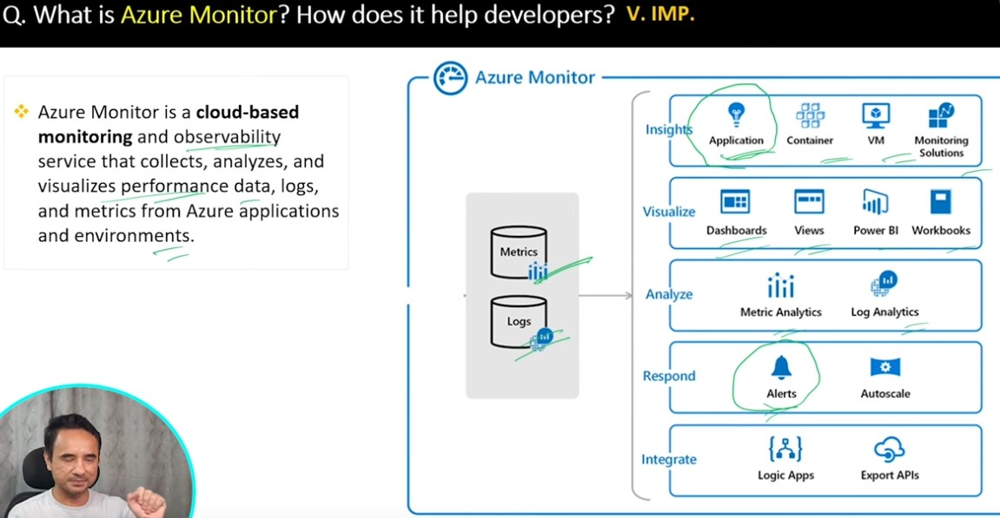

Azure Monitor vs Application Insights Cheat Sheet
This page summarizes the key differences, use cases, and step-by-step tutorial for using Azure Monitor and Application Insights, based on the video Azure Monitor vs Application Insights – When to Use Which?.
What is Azure Monitor?
- Azure Monitor is a cloud-based monitoring and observability service for collecting, analyzing, and visualizing metrics and logs from your Azure resources and applications.
- It helps you keep an eye on your production environment: errors, latency, usage, and more.
- Azure Monitor is the umbrella service that includes tools like Application Insights, Log Analytics, Alerts, Dashboards, and more.

Azure Monitor: High-level overview of monitoring components and flow in Azure.
What is Application Insights?
- Application Insights is a feature of Azure Monitor focused on application performance monitoring (APM).
- It helps you detect, diagnose, and optimize application performance in real time.
- Tracks requests, dependencies, exceptions, user behavior, and more.
- Great for troubleshooting slow responses, errors, and usage anomalies.
When to Use Which?
- Use Azure Monitor for infrastructure-level monitoring (VMs, databases, networks, etc.) and to get a holistic view of your Azure environment.
- Use Application Insights for application-level monitoring (web apps, APIs, background services) to analyze performance, errors, and user behavior.
- They are connected: Application Insights data is available in Azure Monitor, and you can set up alerts, dashboards, and analytics across both.
Step-by-Step: Setting Up Application Insights in Azure Portal
- Go to the Azure Portal (portal.azure.com).
- Search for Application Insights in the top search bar.
- Click + Create to add a new Application Insights resource.
- Fill in the required details (Resource name, Subscription, Resource Group, Region, etc.).
- Choose the Application Type (ASP.NET, Node.js, etc.).
- Click Review + Create and then Create.
- Once deployed, open your Application Insights resource.
- Follow the Getting Started instructions to instrument your app (copy the Instrumentation Key or Connection String and add it to your app's configuration).
- Deploy your app and generate some traffic (open the app, use features, etc.).
- Return to Application Insights in the portal to view metrics, failures, performance, and logs.
How to Connect Application Insights to Your Deployed Azure Web App
- In the Azure Portal, go to your deployed web app (e.g., monitorapp-web).
- In the left menu, expand Monitoring and click Application Insights (it may be under Monitoring, not in the main menu).
- If not enabled, click Enable Application Insights (you can do this without redeploying your code).
- Select Create new resource (or choose an existing one), pick Subscription, Resource Group, and Region.
- Click Apply or Review + Create and then Create.
- Azure will auto-instrument supported stacks (like .NET, Node.js, Java). For custom stacks, add the Application Insights SDK and use the Instrumentation Key/Connection String in your app config.
- Restart your web app from the Overview blade after enabling.
- Visit your app (including
/error) to generate telemetry data. - Return to Application Insights in the portal to view telemetry: Failures, Performance, Live Metrics, and Logs.
Where are Application Insights keys added?
When you enable Application Insights for your Azure Web App, several keys are automatically added as Application Settings (environment variables) in your Web App's configuration.
How to view them:
When you enable Application Insights for your Azure Web App, several keys are automatically added as Application Settings (environment variables) in your Web App's configuration.
How to view them:
- In the Azure Portal, go to your Web App (e.g., MonitorApp-web).
- In the left menu, under Settings, click Configuration.
- Under the Application settings tab, you'll see these keys listed.
APPINSIGHTS_INSTRUMENTATIONKEYAPPLICATIONINSIGHTS_CONNECTION_STRINGAPPINSIGHTS_PROFILERFEATURE_VERSIONAPPINSIGHTS_SNAPSHOTFEATURE_VERSIONApplicationInsightsAgent_EXTENSION_VERSIONDiagnosticServices_EXTENSION_VERSIONInstrumentationEngine_EXTENSION_VERSIONSnapshotDebugger_EXTENSION_VERSIONXDT_MicrosoftApplicationInsights_BaseExtensionsXDT_MicrosoftApplicationInsights_ModeXDT_MicrosoftApplicationInsights_PreemptSdk

Enabling Application Insights for your Azure Web App from the Monitoring section.

Azure Portal: The "Enable Application Insights" screen where you select or create a resource, workspace, and instrumentation options.
Note: In the Azure Portal, Application Insights is often found under the Monitoring section in the left menu of your Web App. You can enable it without redeploying your code!
Example: Creating Application Insights Resource
- Subscription: Visual Studio Enterprise
- Resource Group: MonitorApp-rg
- Name: MonitorApp-Insights
- Region: East US
- Log Analytics Workspace: (new) f6ab9759-ffe4-4b77-81f6-e55987b84565-MonitorApp-rg-EUS [eastus]
Tip: For manual SDK integration, see the official docs for your language/platform. Most Azure App Services support one-click enablement!
Tip: You can set up alerts in Azure Monitor to notify you of errors, performance issues, or usage anomalies detected by Application Insights.
Common Issues You Can Troubleshoot with Application Insights
- Performance problems (slow page loads, delayed API responses)
- Failures and exceptions (HTTP 500 errors, failed dependencies, database errors)
- Usage anomalies (unexpected crashes, drops in user activity)
- Incorrect or inconsistent outputs (different users getting different results)
- Regional or environment-specific issues (problems in one Azure region but not another)
Types of problems you can troubleshoot using Azure Application Insights.
Extra: KQL (Kusto Query Language)
- Application Insights uses KQL for querying logs and telemetry data.
- KQL looks like SQL but is designed for log and telemetry analytics.
- Example:
requests | where duration > 1s | summarize count() by resultCode
Add your Azure Portal screenshots here for each step!
How to Find /error (Internal Server Error) in Application Insights
- Go to your Application Insights resource in the Azure Portal (e.g., MonitorApp-Insights).
- In the left menu, under Investigate or Monitoring, click Failures.
Here you’ll see failed requests, including HTTP 500 errors. Click on the /error path or the 500 status code to see details. - For more details, click Exceptions to view stack traces and error messages (if your app sends exception telemetry).
- You can also use Logs to run a KQL query:
This shows all 500 errors for the /error endpoint.requests | where url endswith "/error" and resultCode == "500" | order by timestamp desc